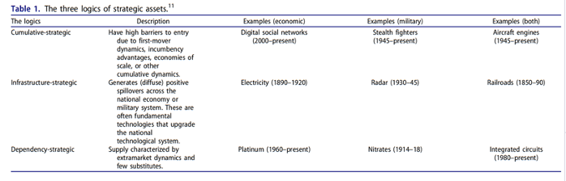
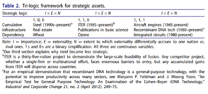
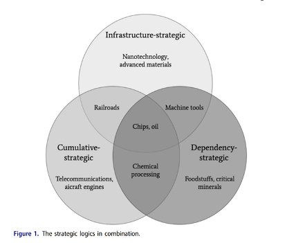

收录于合集

战略资产的逻辑：从石油到人工智能
作者： Jeffrey Ding，牛津大学人类未来研究所（Future of Humanity Institute）研究员，主要研究方向为中国的AI战略，中国的战略科技方针。
编译： 王星澳（国政学人编译员，上海国际问题研究院硕士生）
来源： Jeffrey Ding & Allan Dafoe (2021) The Logic of Strategic Assets: From Oil to AI, Security Studies , 30:2, 182-212, DOI: 10.1080/09636412.2021.1915583
导读
在国际关系领域，各国频频使用“战略资产”的概念，合理化本国实施外贸管制等政府行为。然而，“战略资产”明确定义的缺失导致了各国对这一概念的误用与滥用。针对这一问题，本文提出， 当某一资产存在重大外部性且企业或军事组织因这种外部性不会主动采取社会最优行为时，决策者应当将其界定为“战略性资产”。 重要性、外部性和国有性三者共同决定了某一资产的战略价值高低。基于此，本文还提出了三种外部性形式，包括累积性战略逻辑、基础设施性战略逻辑和依赖性战略逻辑。由此，本文为我们提供了一个区分不同资产“战略价值”的可行性框架，也使我们可以从多个视角认识AI等关键技术的战略价值。
随着中美博弈、新冠疫情及俄乌冲突等不确定性事件接连发生，强化“经济安全保障”能力，确保战略资产供给的稳定成为当前各国的一大趋势。本文的视角不仅有助于我们重新审视当前中国对不同资产和技术战略价值判断的合理性，也有助于我们预判发达经济体将来可能对中国采取的出口管制产品和技术领域。
编译
人们普遍关注战略性产业及科技竞争对中美竞争加剧的关键性作用，但往往忽视如何界定某一事物是否具有“战略价值”。政治家和学者长期就产品或技术具有“战略意义”争论不休。本文以为，“战略资产”指那些在国家间竞争中为确保本国利益，需要国家最高层级关注的资产。
本文的框架大致可以用下述公式表述：
资产的战略等级=重要性×外部性×国有性
重要性（Importance），指某一资产的经济或军事效用。例如，运输业对经济的贡献高于高端时尚业。
外部性（Externality），指某一资产的经济或安全外部性。企业或军事组织在未经协调的情况下不会对具有外部性的资产采取社会最优行为。如基础性研究，虽然其能够产生正外部性，但由于私营部门无法占有全部外溢效应，因而它们对这类研究的投资较少。
国有性（Nationalization），指这些外部性在国家间的竞争程度。由于药物等领域的基础性研究很容易扩散至其他竞争国，因而其战略程度有限。
本文提炼出三种外部性形式，包括累积性战略逻辑、基础设施性战略逻辑和依赖性战略逻辑。这些外部性形式囊括了大量的战略资产（参见图表1）。
累积性战略逻辑（The cumulative-strategic logic）涉及需要持续积累，具有较高准入壁垒的资产或领域，包括先发优势（first- mover dynamics/first-mover advantages）、在位优势（incumbency advantages）和规模经济。这种高准入壁垒导致市场投资不足，军事组织需要国家的明确支持以实现投资最优化。航空发动机的研发成本高昂，学习曲线陡峭，属于典型的累积性战略资产。
基础设施性战略逻辑（The infrastructure-strategic logic）通常属于基础性科技，对国民经济或军事系统具有正外部性。由于无法占有全部相关收益，行为体对其缺乏投资意愿。铁路对经济具有巨大的正外溢效应，属于典型的基础设施性战略资产。
依赖性战略逻辑（The dependency-strategic logic）涉及那些公开竞争市场不提供的资产。这意味着这类资产面对断供异常脆弱。依赖源自于供应链在物理、组织或国家上的集中，这使得对手可以借故干预以减少供应。
这些逻辑表明， 某一资产的战略等级并不取决于这一产品或科技本身。战略等级不仅受到国际环境特征的影响，也同某国的特定战略诉求相关联。
既有文献无法解释如何确定某一资产应当成为国家的战略目标。之所以要确定战略资产，是因为人们对同“敌人”交易抱有疑虑。这也是经济相互依赖与冲突理论的核心。然而，如何区分战略物资同其他物资阻碍了这些辩论，尤其是当“战略”的含义在时空上都具有很大差异时。通过将军事及经济效用同生产的外部性分离，本文提供了一个清晰的概念。本文同样有利于关于特定科技的战略及国策的讨论，这类讨论逐渐延伸至贸易管控之外。通常，对战略资产的出口管控阻碍一国的科技创新。本文的框架也有助于制定更加多维且务实的科技战略。

01
“战略”观念的演变
按照其分析重点划分，既有的关于战略资产的理论可以归为三类。
第一，以军事效用界定战略资产。这类研究强调特定资产的军事效用，认为军事效用决定了某一产品或科技的战略价值。这类研究的隐性假设是，“那些可用于战争或可以转化、加工为武器的产品或科技才具备战略价值。”这种观点常见于美国等国家的出口管控及国防产业政策。军事资产通常较为重要且具备一种战略逻辑，具有较高的战略价值。然而，有的军事资产却并不具备较高的战略价值。一些重要的军事资产可以随时通过国际市场得到供应，或通过既有的组织能力在国内生产。换言之，它们不存在外部竞争，不需要国家高层的关注。
第二，以可替代性界定战略资产。这类研究认为可替代性决定战略价值。某种产品或科技对经济或军事活动而言越关键，可替代程度越低，其战略价值越高。这类研究主要关注依赖性风险，忽视了可能危及战略资产的其他外部因素。而且，这类研究也没有明确外部竞争的条件。尽管供给依赖常因政治原因具有竞争性，但一些依赖并不具备竞争性。例如，两个交战国的石油供应均因自然灾害而中断，而这对两国的影响大致相等。
第三，以战略性贸易界定战略资产。这类研究强调特定产业的巨大先发优势、高准入壁垒及外溢效应。在垄断寡头的地位随着外国直接投资（foreign direct investment flows）自由化的发展而愈发稳固的背景下，这类研究迅速兴起。战略性贸易提倡者致力于保证国家经济在具有陡峭学习曲线的产业领域具有竞争力，且受益于生产特定资产的外溢效应。不过，这类研究大多局限于经济领域，并且几乎不区分基础设施型外部性和积累型外部性。本文的框架弥补了这些不足。
02
概念框架
在本文的框架下，“战略资产”必须具有特定的外部性，这种外部性既重要，又具有竞争性。资产的战略等级（strategic level）则由三种因素以非简单加总的方式构成。每一种因素都是必须的，而这三者的结合可以说明某一资产的战略价值（参见表2）。

对于累积性战略领域，具有外部性但却缺乏重要性的资产并不具备战略价值，如那些需要长期技术积累但产业规模极其有限的技术领域。与之相对，也存在极度重要但不具备战略价值的资产，如机关枪对步兵和装甲车至关重要，但它的生产非常简单，不具备显著的外部性。对于每种逻辑，本文将通过阐述其外部性的机制、相关的战略资产案例、同相关逻辑的辨析及相关概念的方式展开。
第一，累积性战略逻辑。它是一种逐渐筑高准入壁垒的累积过程。这一概念包含长期投资、先发优势、赢者通吃效应（winner-take-all dynamics）、“干中学”（learning by doing）等子概念。累积效应的效用大相径庭。存在赢者通吃现象和强大网络效应的资产具备高度战略价值，而因“干中学”而形成较小规模效应的资产仅具备一定的战略价值。在经济领域，人们对这一逻辑有较为深入的理解。由于跨国企业竞争将剩余转移给消费者，大多数市场无法获取潜在利润。然而，在收益的周期较长、风险较高、经济规模巨大或存在先发优势的情况下，市场竞争会减弱。半导体、商务飞机及电信常被归为累积性战略产业。作为积累过程的副产物，这些战略资产可以持续为企业提供足以覆盖壁垒成本的利益。而且，在一些军事科技与研发这些科技的机构的互动中，累积效应还与“干中学”效应相互作用。例如，隐形战斗机技术已经发展为高度复杂的知识体系（organizational knowledge），这使得他国无法通过获取许可、窃取蓝图或绑架工程师的方式掌握这类集体性知识（collective memory）。
第二，基础设施性战略逻辑。它包括那些产生大量无法被发明者内化的积极外溢效应的资产。这类资产往往促成国家的科技体系升级，其他企业也可从中收益。在这一逻辑中，“竞争性”这一变量可以测量外溢在多大程度上保留在国境或盟国范围之内，而非扩散至全球。然而，技术扩散往往受到地理阻隔，使得不同国家的技术优势出现差异。这一逻辑最适用于测量兼具经济与军事属性的资产的战略价值。
第三，依赖性战略逻辑。这一逻辑强调私人部门无法内化的依赖关系，即在商品和技术交易中，外国供应商们对进口国施加的负外部性。这种负外部性表现为中断供应时的经济和安全损失。这类资产不仅强调双边的权力关系，而且也关注这种对供应的依赖问题属于政治上不稳定，还是应急能力不足。
第四，逻辑的组合。上述的逻辑在任何案例中都可能重叠、相互补充、相互削弱，这使其变得更加复杂。国家尤其应当关注那些具备多重战略逻辑的资产，如石油和芯片。它们更具战略价值且需要更多样的政策以处理其外部性。而且，不同逻辑之间存在权衡关系。国家在享受某一战略的正外部性时，可能需要承担另一战略的负外部性。
既有的关于国家经济安全的文献分别考察了上述的逻辑，而本文则将这些逻辑整合进一个综合性框架内，以此理解国家的整体科技战略。本文认为， 采取适当政策管理符合本文逻辑的资产的国家可以赢得权力与财富。

03
AI时代的战略资产
人们普遍意识到AI的重要性，但对其战略性的认识有所欠缺。
AI的基础设施属性最为突出。作为一种大众科技（general-purpose technology），AI技术的溢出效应及较长的回报周期使得私人投资难以从投资AI技术中获取多数收益。因而，AI技术依赖政府的大规模长期投资。而且，如同其他大众科技那样，为了充分利用AI技术的优势，现有的组织需要改组。
大数据平台突出体现了AI在民用领域的累积性战略逻辑。在这类平台中，更多的数据，更优的机器学习模型和更多的用户之间产生了良性的循环，其先发优势也减少了同类竞争。而在军事领域，不同应用的累积战略效应的表现有所不同。一方面，由于军用AI技术直接建立于民用技术之上，先进的军队更难维持相关技术的先发优势。另一方面，由于先进武器需要将AI整合进更复杂的系统中，在这类领域中累积战略效应更加突出。
相较于其他两个逻辑，AI技术的依赖性逻辑得到了最广泛的关注。美国学界和政界都将AI硬件界定为中美科技竞争中的战略资产。由于逻辑间的相互作用，关于AI供应链依赖性的政策更为复杂。以半导体生产设备为例，考虑到美国企业占据50%的相关国际市场，美国国家人工智能安全委员会（NSCAI）建议美国政府继续通过出口管制维持美国在AI硬件，尤其是半导体制造设备领域的优势。然而，从累积性战略的角度考虑，美国的最优策略是最大化这一产业在全球的利益。因此，美国利用中国对半导体制造设备的依赖获取对华优势的行为可能导致欧、日的半导体制造设备企业获得中国的订单，获取累积性战略收益。
词汇整理
先发优势 first-mover dynamics/first-mover advantages
在位优势 incumbency advantages
外国直接投资 foreign direct investment flows
干中学 learning by doing
审校 | 吕紫烟 杨沛鑫
排版 | 屈媛媛 廉梦瑶
文章观点不代表本平台观点，本平台评译分享的文章均出于专业学习之用, 不以任何盈利为目的，内容主要呈现对原文的介绍，原文内容请通过各高校购买的数据库自行下载。

国政学人
支持学术公益与知识传播
微信扫一扫赞赏作者 __赞赏
已喜欢，对作者说句悄悄话
取消 __
发送给作者
发送
最多40字，当前共字
上一页 1/3 下一页
长按二维码向我转账
支持学术公益与知识传播
受苹果公司新规定影响，微信 iOS 版的赞赏功能被关闭，可通过二维码转账支持公众号。